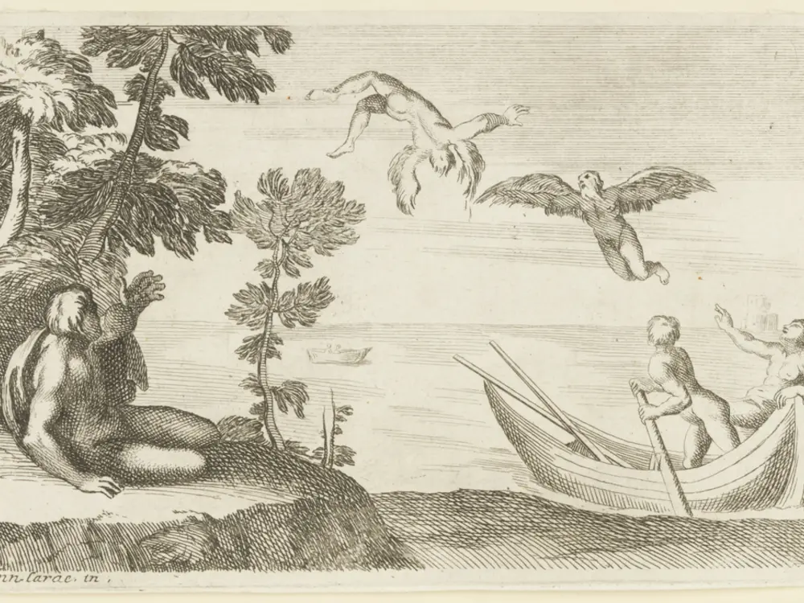
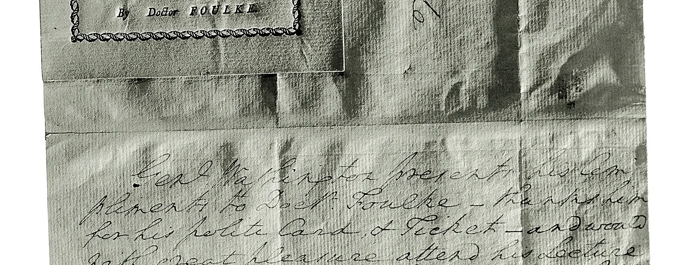
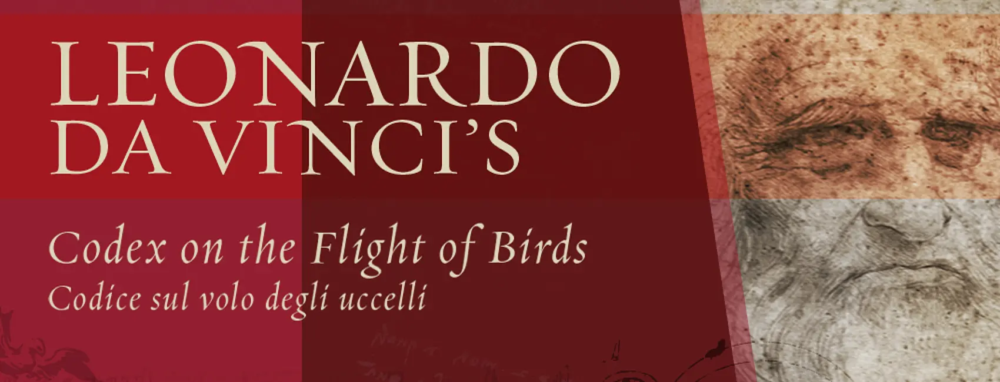
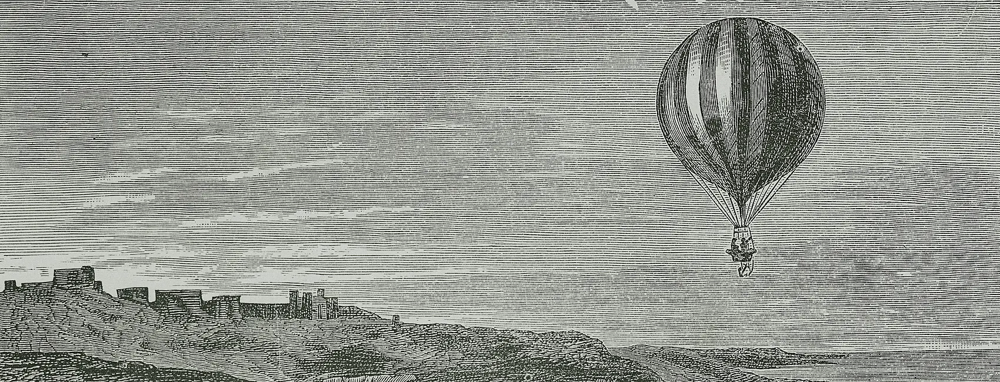
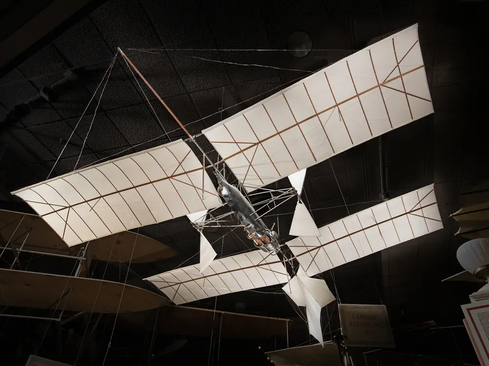
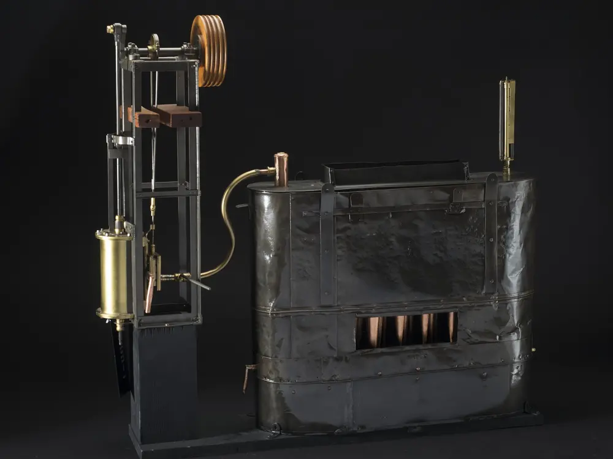
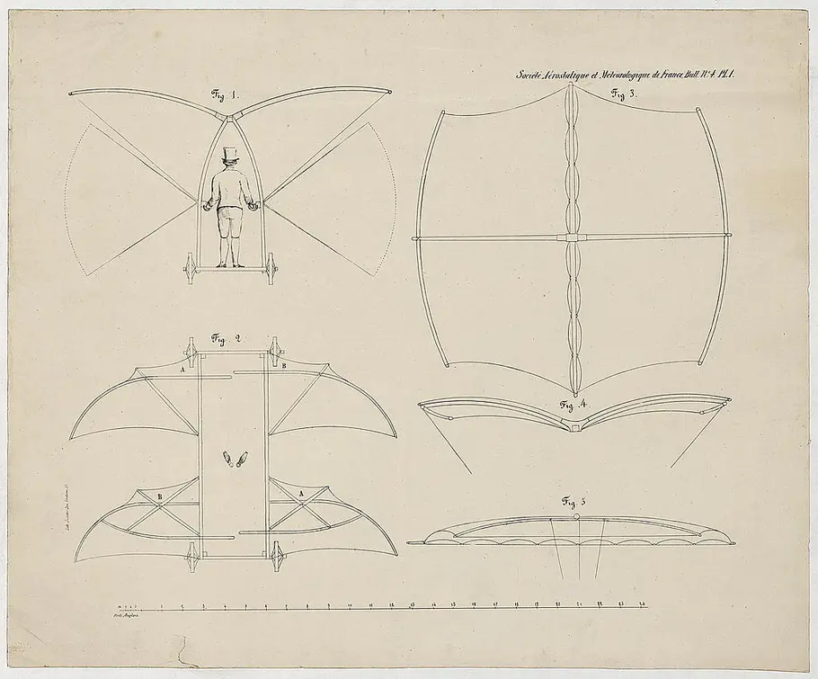
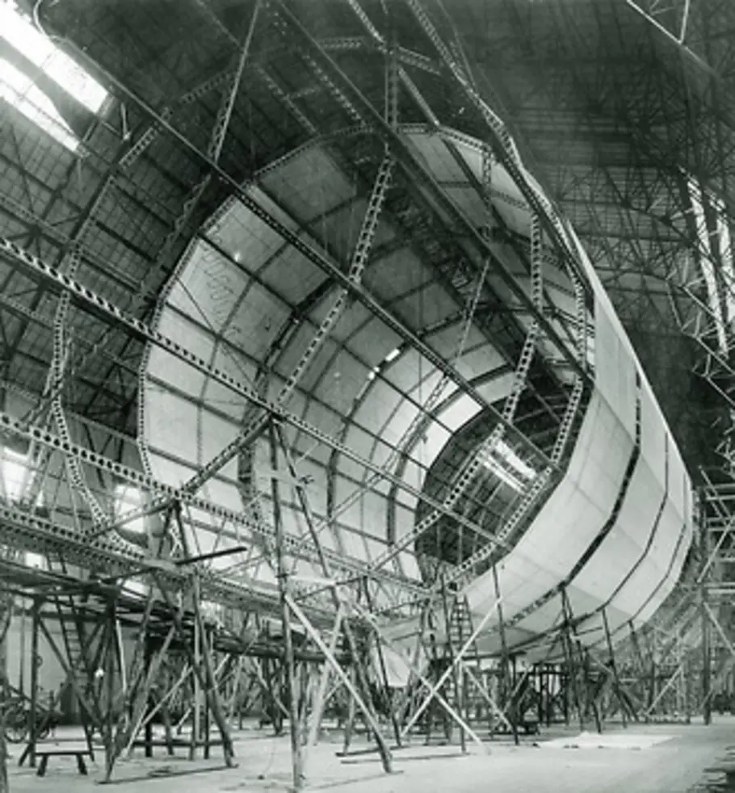

从人类最早的岁月开始，我们将神灵置于天空，将恶魔放逐到地下的黑暗之处。飞行的神灵和有翅膀的生物充满了全球各地文化的宗教、神话和文学。
模仿鸟类、闯入神灵世界而挑战命运的人们的故事，几个世纪以来一直是神话和文学的主要元素。
"飞行既古老又普遍。它是我们最古老故事中神灵和英雄的基本元素。"
在莱特兄弟1903年首次成功飞行之前，人类早已向往天空

从人类最早的岁月开始，我们将神灵置于天空，将恶魔放逐到地下的黑暗之处。飞行的神灵和有翅膀的生物充满了全球各地文化的宗教、神话和文学。
模仿鸟类、闯入神灵世界而挑战命运的人们的故事，几个世纪以来一直是神话和文学的主要元素。
"飞行既古老又普遍。它是我们最古老故事中神灵和英雄的基本元素。"
风筝是人类发明的第一种飞行器，起源于中国。它们不仅是玩具，更是科学仪器、军事工具和宗教象征。
用于测量距离、风向和风速
传递信号、侦察敌情
本杰明·富兰克林的雷电实验


首次公开展示热气球飞行

首次氢气球飞行实验

皮拉特尔·德·罗齐尔成为第一个飞上天空的人类
"人类终于实现了飞行的梦想，虽然只是被气球带着飘浮在空中。"
— 1783年巴黎公报

气球虽然能让人类升空，但无法控制方向。飞艇的出现解决了这个问题，开启了可控飞行的新纪元。
巴西航空先驱Alberto Santos-Dumont在巴黎进行了多次成功的飞艇飞行实验，证明了可控飞行是可能的。

这台Clement V-2引擎于1903年为Santos-Dumont的9号飞艇提供动力。虽然是为摩托车设计的，但其轻重量和充足的动力使其非常适合推进飞艇。
V-2还为皮带驱动的鼓风机提供动力，该鼓风机为飞艇氢气包裹中的独立气囊加压。
在整个19世纪，大多数人仍然认为在比空气重的飞行器中进行动力飞行是不可能的。但受到George Cayley等创新者工作的启发，两代工程师开始努力证明人们错了。

Cayley在1804年制造了世界上第一架手抛滑翔机。它长五英尺，是现代飞机配置的第一个例子，具有独立的升力和控制系统。
他被认为是第一位航空工程师，因为他首次将飞行器构想为具有独立升力、推进和控制系统的固定翼飞行器。

Count Ferdinand von Zeppelin引领了硬式飞艇的发展。与压力飞艇不同，硬式飞艇的气体被容纳在刚性框架内的独立气囊中。
硬式飞艇比压力飞艇大得多，可以运载更多的乘客和更重的货物。
从神话传说到风筝，从气球到飞艇，从滑翔机到航空器——人类对飞行的渴望从未停止。这些先驱者的努力和发现，为1903年莱特兄弟的成功奠定了基础。